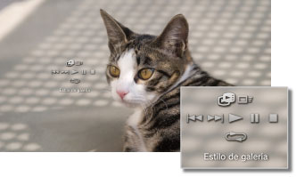

Foto > Visualización de imágenes como una galería
Visualización de imágenes como una galería
Se mostrará automáticamente cada imagen por orden. Una vez seleccionado el icono de una carpeta o soporte que contiene las imágenes, pulse el botón START (Iniciar) para que se inicie la galería.
Notas
- Asimismo, es posible iniciar la galería desde el panel de control o desde el menú de opciones de una imagen.
- Si la galería no se puede iniciar pulsando el botón START (Iniciar), realice esta operación desde el panel de control.
Uso del panel de control de la galería
Si pulsa el botón  durante la galería, se mostrará el panel de control.
durante la galería, se mostrará el panel de control.

 |
Estilo de galería | Seleccione uno de los cinco patrones de visualización de la galería. |
|---|---|---|
 |
Velocidad de cambio | Seleccione una de las tres velocidades de cambio: [Rápida] > [Normal] > [Lenta]. |
 |
Anterior | Permite pasar a la imagen anterior. |
 |
Siguiente | Permite pasar a la imagen siguiente. |
 |
Reproducir | Inicia la galería. |
 |
Pausa | Introduce una pausa en la galería. |
 |
Detener | Detiene la galería. |
 |
Repetición | Reproduce la galería repetidamente. |
Nota
Si (Estilo de galería) está ajustado en [Álbum de fotos] o [Álbum de fotos 2], utilice el joystick derecho del mando inalámbrico SIXAXIS™ para utilizar funciones como la ampliación o reducción del tamaño de imagen o el ajuste de la velocidad de cambio.
Reproducción de presentaciones de diapositivas durante la reproducción de música
Es posible reproducir una presentación de diapositivas y música al mismo tiempo.
1. |
Inicie la reproducción de música en |
|---|---|
2. |
Pulse el botón PS. |
3. |
Diríjase a |
 (Música).
(Música). (Foto), seleccione las imágenes o la carpeta que desee visualizar en la presentación de diapositivas y, a continuación, pulse el botón START (inicio).
(Foto), seleccione las imágenes o la carpeta que desee visualizar en la presentación de diapositivas y, a continuación, pulse el botón START (inicio).Notas
- Si pulsa el botón PS mientras se están llevando a cabo reproducciones simultáneas, se visualizará el menú XMB™ y podrá cambiar las imágenes o la música.
- Para cancelar la reproducción simultánea, es necesario detener la reproducción del pase de diapositivas y de la música por separado. Una vez detenida la reproducción de una de ellas, seleccione la pista o la imagen que se está reproduciendo y detenga la reproducción.
- No es posible reproducir discos Super audio CD al mismo tiempo que una presentación de diapositivas.
- Si
 (Ajustes) >
(Ajustes) >  (Ajustes de música) > [Frecuencia de salida] está establecido en [44,1 / 88,2 / 176,4 kHz], no podrá reproducir contenido de música al mismo tiempo que una presentación de diapositivas.
(Ajustes de música) > [Frecuencia de salida] está establecido en [44,1 / 88,2 / 176,4 kHz], no podrá reproducir contenido de música al mismo tiempo que una presentación de diapositivas.
Aviso
Los discos Super Audio CD no se pueden reproducir en ciertos sistemas PS3™. Para más información, consulte [Tipos de discos que se pueden reproducir].